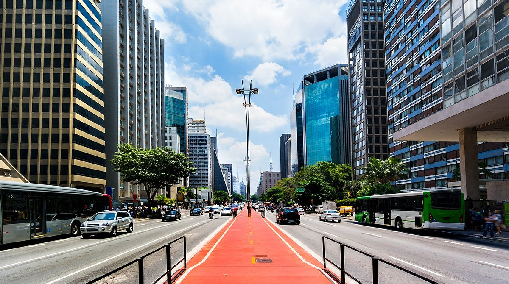

Curiosidades da Cidade
São Paulo já teve ônibus de dois andares

Aqueles ônibus vermelhos, muito populares em Londres, já percorreram as ruas de São Paulo. Em 1987, a Companhia Municipal de Transporte Coletivo colocou em circulação 11 unidades de ônibus vermelhos de dois andares com capacidade de 112 passageiros. No ano seguinte, mais 26 carros da mesma modalidade passaram a percorrer a cidade.
Tiro ao alvo no Mercadão
Durante a revolução de 1932, os soldados usavam os vitrais do Mercado Municipal de São Paulo como treinamento para o tiro ao alvo (que desperdício!). Após o fim das batalhas, foram necessários mais dois meses de ajustes para que o Mercadão pudesse, enfim, ser inaugurado no dia 25 de janeiro de 1933.
Arena de touradas

Conhece a Praça da República, no centro de São Paulo? É quase que inacreditável, mas neste mesmo espaço, há aproximadamente 100 anos, funcionava uma arena de touradas.
Quando a Avenida Paulista tinha outro nome
Em 1927, após a morte de Carlos de Campos, então governador de São Paulo, o endereço foi renomeado em sua homenagem. Os paulistanos não gostaram nem um pouco da mudança e logo depois, no início da década de 1930, o local recebeu novamente seu nome original: Avenida Paulista.
Próxima parada…

Foi entre as estações Jabaquara e Saúde que aconteceu a primeira viagem de metrô na cidade, em 1972. Depois de dois anos, o trecho Jabaquara – Vila Mariana começou a receber passageiros também.
Bairro da Liberdade antes dos japoneses
O reduto nipônico de São Paulo era antes morada dos italianos. Até 1920, foram os europeus que fixaram residência no bairro da Liberdade. A imigração japonesa só chegou à região na década de 1930, quando as primeiras famílias começaram a se instalar pelo bairro.